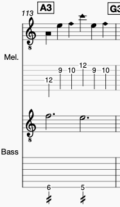

There is a score/tablature, fretboard diagrams, and (to be done) youtube video instructions, that will help you along the way.
You don't need to know how to read music. In fact, you can get 90% of the way there just by watching the videos and referring to the Fretboard diagrams. It will be a bit of work, but it can be learned incrementally and, as you'll see, even playing part of the piece is very fun and sounds great.
The Score (and tabs) to go along with the diagrams below is available Here
The piece is composed entirely from XXX very short phrases that are a pair of 3 quarter note 'arpeggios'. The piece has a time signature of 6/4 so each phrase is a single measure. I'll call these 'phreasures'
There is a bass voice that runs along with this constant flow of phreasures. The voice is simply a pair of notes played at the first and fourth note of each phreasure. example:

These phreasures are used to build series of 16
sequences.
Each sequence introduces one or two new phreasures as the piece progresses. I would suggest just learning phreasures as you learn each new sequence. The Fretboard diagrams below map out the general fingering information for each phreasure used in the piece.
I realize my explanations of the piece are sounding complicated at this point. Fear not! Once you progess through a few diagrams, along with the Instruction Video, you'll quickly understand how the piece is structured
| Group | ↑|↓ Sequence | |
|---|---|---|
| Intro | G3 (3 times) | |
| 1 | *F3 | |
| *A3 | ||
| 2 | ↑E3-F3 | play E3 through F3 in ascending order |
| ↓B3-A3 | play B3 through A3 in descending order | |
| 3 | ↓F3-D3 | |
| ↑A3-C4 | ||
| 4 | ↑C3-F3 | note each seq. group increases the # of phreasures by 1 |
| ↓D4-A3 | ||
| 5 | ↓F3-D3 | |
| ↑A3-E4 | ||
| 6 | ↑A2-F3 | |
| ↓F4-A3 | ||
| 7 | ↓F3-G2 | |
| ↑A3-G4 | ||
| 8 | ↑F2-F3 | |
| ↓A3-A2 |
Appears first and acts a refrain between each sequence in the piece. The refrain is the G3 repeated 3 times.